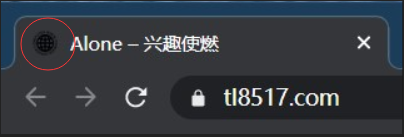
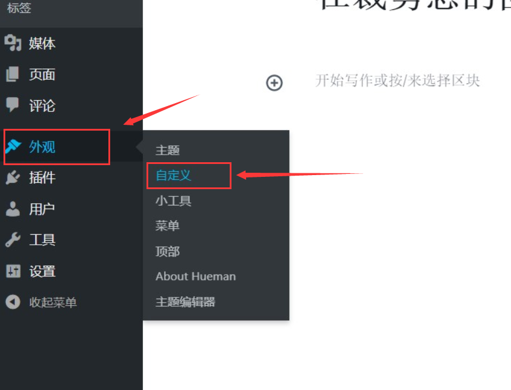
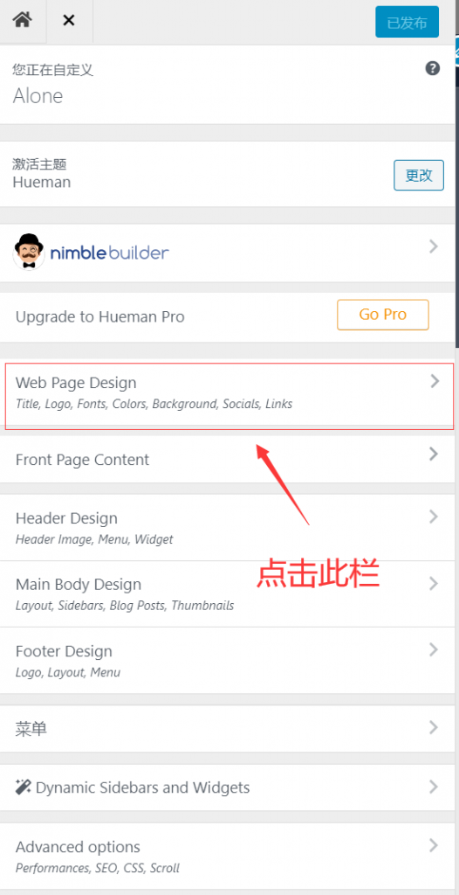
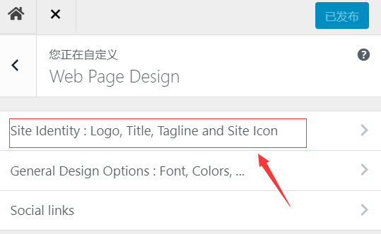
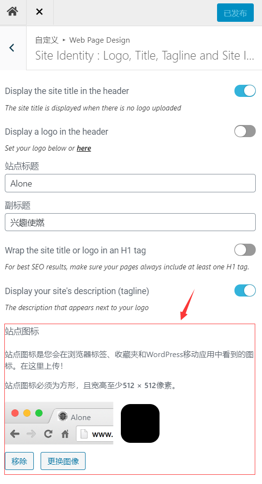

在裁剪您的图像时发生了错误 ，（wordpress使用及问题）
初期建站成功后，在设定站点图标时，在裁剪大小过程中，会提示“ 在裁剪您的图像时发生了错误 ”。这是因为缺少PHP GD库，引起的。我们只需要安装上相应的库，并重启web服务器就可以了。文章包含设定站点图标的方法和怎样安装相应的库。

更改站点图标 : wordpress左侧菜单选择外观->自定义->web page design ->site ldentity ->站点图标




出现的问题 :
1 | 裁剪站点图标时提示: |
我在建站过程中wordpress的使用问题汇总，请点击下面的链接